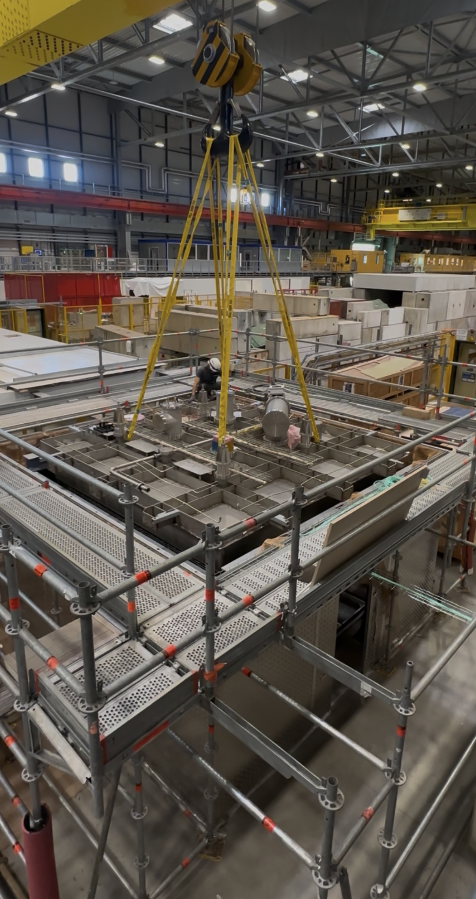
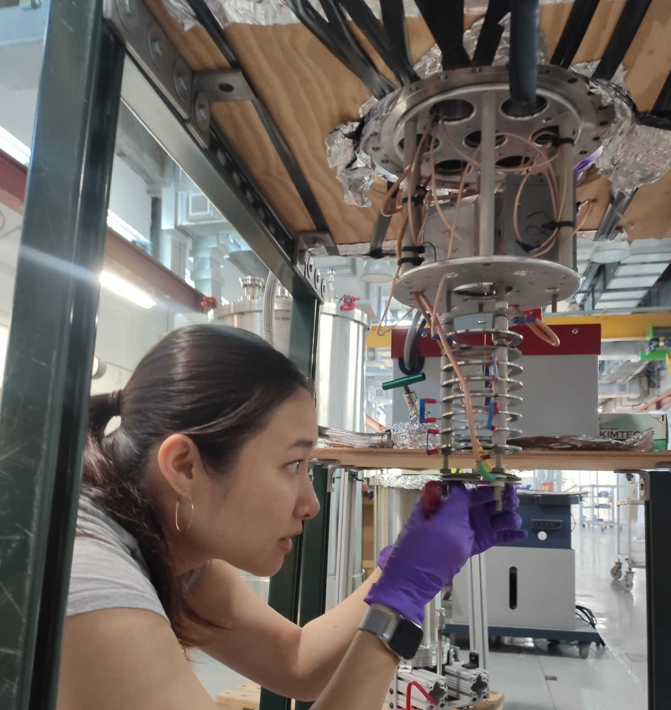
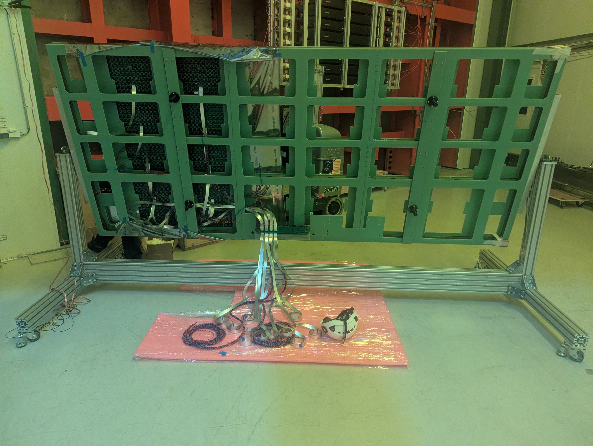

RESEARCH
Every breakthrough in particle physics begins with a new way of observing nature. My research explores innovative detector technologies for future neutrino experiments, from novel pixelated readout concepts to large-scale liquid argon detectors.

From detector concepts to real hardware. Installation of a pixelated Charge Readout Plane (CRP) for a cold-box test at Neutrino Platform, CERN.
WHY DETECTOR R&D?
Particle physics advances hand-in-hand with detector technology. Every increase in precision, every new discovery, and every new experiment relies on innovations that allow us to observe particles more accurately than ever before.
My research focuses on developing novel detector concepts for Liquid Argon Time Projection Chambers (LArTPCs), exploring new readout architectures that improve imaging capability, scalability, and sensitivity for future neutrino experiments.
By combining detector physics, electronics, and instrumentation, I aim to develop technologies that will enable the next generation of neutrino detectors.
PIXELATED DETECTORS
Traditional Liquid Argon TPCs use wire planes to reconstruct particle trajectories. While this technology has enabled tremendous scientific success, future experiments demand even higher imaging capabilities and improved pattern recognition.
Pixelated readout offers true three-dimensional imaging by directly measuring charge on individual pixels. This approach can reduce reconstruction ambiguities, improve low-energy event identification, and open new possibilities for future detector designs.

HARVARD UNIVERSITY
During my PhD at Harvard University, I investigated the physics potential of Q-Pix, a novel pixelated readout architecture designed specifically for Liquid Argon Time Projection Chambers.
Unlike conventional wire-based readout systems, Q-Pix employs a self-triggered, asynchronous architecture in which each pixel independently records charge over time. This enables true three-dimensional imaging while preserving excellent sensitivity to low-energy interactions.
My work focused on evaluating the detector's sensitivity to solar neutrinos, demonstrating its potential for precision measurements that are difficult with conventional detector designs.
Using detailed detector simulations and reconstruction studies, I explored how pixelated readout could enhance low-energy neutrino physics and provide new opportunities for future Liquid Argon detectors.
FROM CONCEPT TO REALITY
At Lawrence Berkeley National Laboratory, my research continues with the development of a pixelated Charge Readout Plane (CRP) based on the LArPix readout system. While Q-Pix explored a new detector concept through simulation, the Pixelated CRP project focuses on building and validating the hardware required for future large-scale detectors.
The goal is to demonstrate that pixelated readout can be successfully integrated into large Liquid Argon detectors, combining fine spatial resolution with scalable cold electronics suitable for next-generation neutrino experiments.
My work includes detector assembly, electronics integration, system commissioning, and software development for detector operation and performance studies.

A CONTINUOUS JOURNEY
Although separated by different projects and institutions, my detector R&D has followed a common theme: exploring new technologies that improve how we observe neutrino interactions.
Beginning with Q-Pix during my PhD, I investigated how pixelated readout could transform Liquid Argon TPCs through novel detector architectures. Today, that vision continues through the development of Pixelated CRPs, where many of these ideas are now being implemented and tested in real detector hardware.
This progression—from detector concepts to functioning instrumentation—illustrates how innovative ideas evolve into practical technologies capable of supporting future scientific discoveries.
LOOKING AHEAD
Future neutrino experiments will demand detectors that are larger, more precise, and capable of handling increasingly complex data. Meeting these challenges requires not only incremental improvements, but also new ideas in detector design, electronics, and system integration.
My research aims to bridge innovative detector concepts with practical implementation, transforming new technologies into reliable scientific instruments capable of enabling the next generation of discoveries in neutrino physics.
CURRENT INTERESTS
Developing pixel-based charge readout technologies for future Liquid Argon TPCs.
Designing and integrating cryogenic electronics for large-scale detector systems.
Combining detector hardware, electronics, and software into complete experimental systems.
Exploring innovative technologies that will enable the next generation of neutrino experiments.